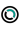

Datenquellen und Nutzungshinweise
Generell gilt: Hinsichtlich der inhaltlichen Richtigkeit,
Genauigkeit, Aktualität und Vollständigkeit der
veröffentlichten Informationen wird keine Gewähr übernommen.
Bitte beachten: Viele Quelleangaben und Links zu Metadaten; Downloads etc. finden Sie in der Legende des jeweiligen Themas
Datenquellen Bund und Kantone, Portal jeweils auf CH oder Kantonskürzel verlinkt:
| CH/KT | Quelle | OpenData |
| CH | swisstopo: Landeskarten, Topographische Karten, Höhenmodelle usw. | |
| CH | geodienste.ch | versch. |
| CH | Verschiedene Bundesämter. Copyright-Vermerk in der Legende des Themas. | |
| AG | Aargauisches Geografisches Informationssystems (AGIS) | k.A. |
| AI | Geoportal AI | |
| BE | Amt für Geoinformation des Kantons Bern (AGI) | |
| BL | Geoportal BL | k.A. |
| BS | Geoportal BS | |
| FR | Geodaten FR | |
| GE | Le système d'information du territoire à Genève (SITG) | |
| GL | Geoportal GL |
 |
| GR | Geoportal GR | k.A. |
| SH | Geoportal SH | |
| SO | Geoportal SO | |
| SZ | Geoportal SZ | |
| TI | Portale per il download dei geodati | |
| TG | ThurGIS | |
| UR | GEO.UR | |
| VS | Geodienste VS | k.A. |
| ZG | Geoportal ZG | |
| ZH | Geolion ZH |
| Freie Nutzung. Quellenangabe ist Pflicht. | |
| Freie Nutzung. | |
| k.A. | Keine Angabe, siehe jeweilige Nutzungsbedingungen. |